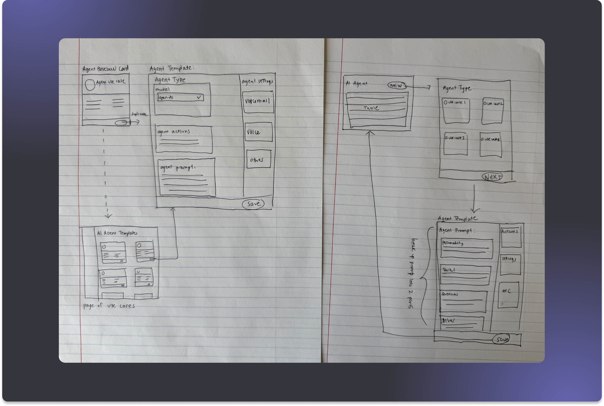
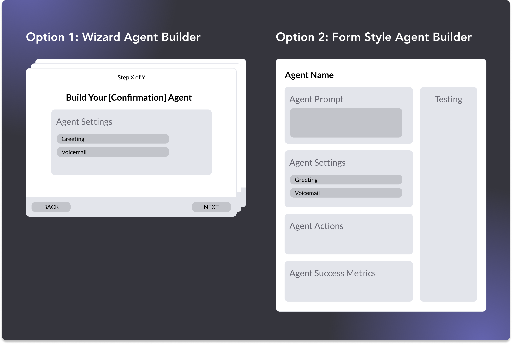
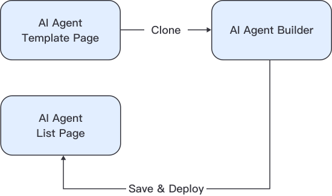
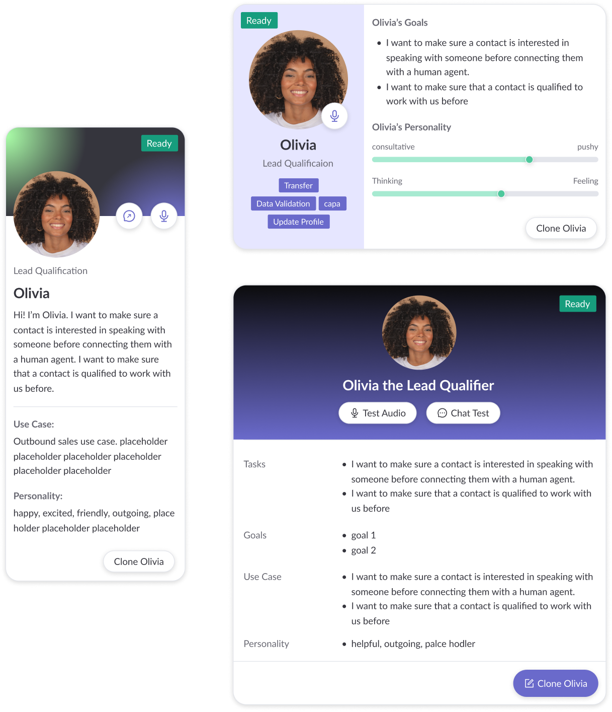

Wireframing & Sketching
Aligning with Stakeholders Before Designing
This was a 0-to-1 greenfield project, so I started the ideation phase with some sketches.

The sketches helped me formulate design questions, so I translated those into illustrative mocks and brought them to a kickoff meeting with my PM and CPO to get input before committing to real design work:
- Architecture — Should the AI Agent experience live as a standalone page within the Regal App?
- Agent Building Experience — What should the UX of the builder be: form vs. wizard?
- Visual Direction — Since this is a pivotal product moment for Regal, should the experience feel like a departure from existing app styling?

During this meeting, I facilitated alignment around the Form UX by grounding my recommendation with insights from my research:
- From my SME interviews, I learned that building an AI Agent follows a structure. The right UI would make the formula visible and not obscure it behind sequential steps.
- A Wizard flow would work best as an intake experience — asking questions to generate something on the user's behalf. While it's a compelling idea, each step becomes a blank canvas, which is the exact problem we were trying to solve.
- Competitive analysis showed unstructured, giant freeform inputs or steps broken up by tabs — which felt like overkill for our users.
The Takeaway
A structured form was the only pattern that didn't fall into either trap.
From Decision to Flow
Defining the MVP
The meeting helped me define an MVP flow made up of 3 pages:
- Template Page — Where users can browse templates and start the process.
- Builder Page — Where users can edit and tailor the template to their specific needs (and eventually build from scratch).
- Agent List Page — Where saved agents are stored.

Each page then went through multiple rounds of design options — except the list page, which reused an existing pattern. Knowing that AI Agents was a pivotal moment for Regal, I made a deliberate choice to push the template page visually, despite directions to stay within existing styling to signal a meaningful shift in Regal's platform.

The builder form also went through rounds of layout exploration. The core challenge was figuring out how to organize all the required pieces into a single page that felt structured — not overwhelming.